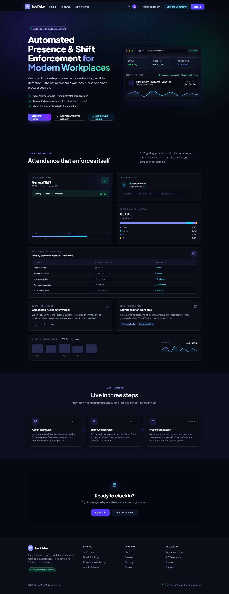
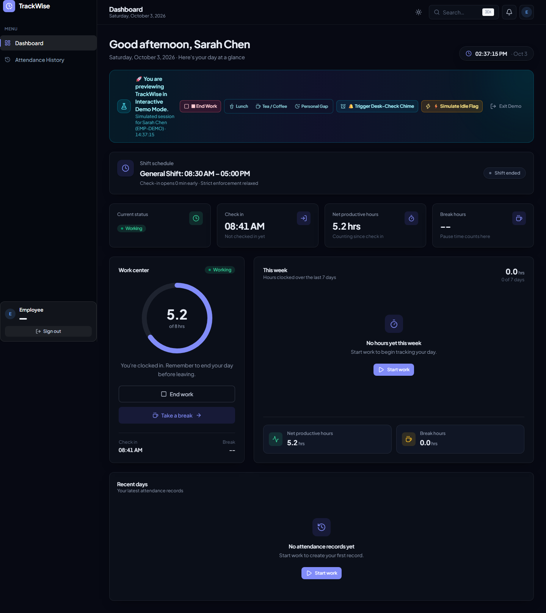
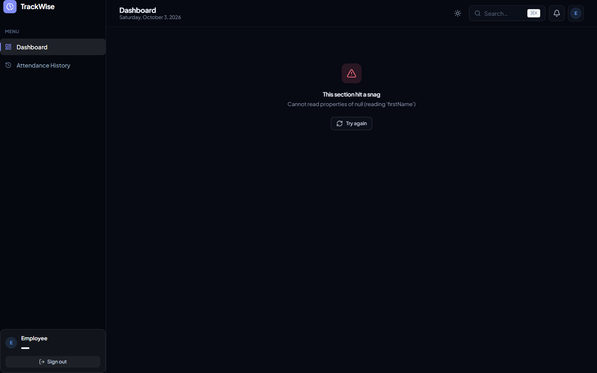

Workforce Presence,
Re-Engineered.

[WORKING]

public.users ⇄ modern.users
30:00
Native Web Audio Pulse

React 19 • TypeScript • PostgreSQL
Drizzle • Render
trackwise-client.onrender.com
github.com/Aby020/TrackWise